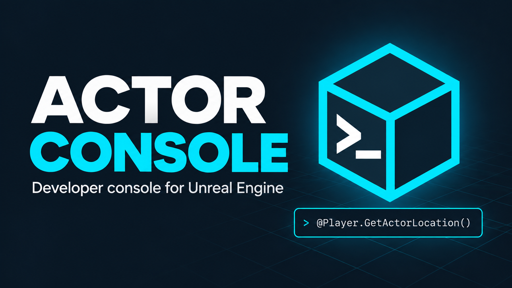
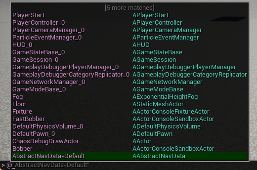
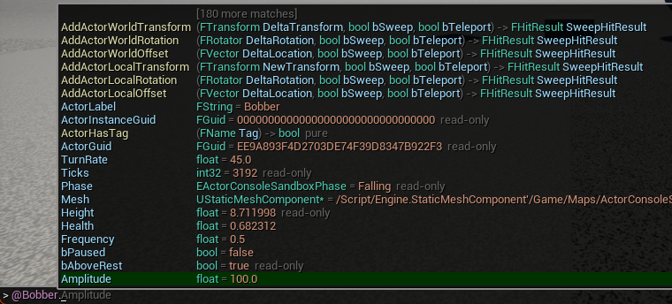
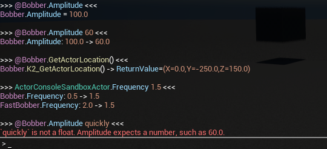
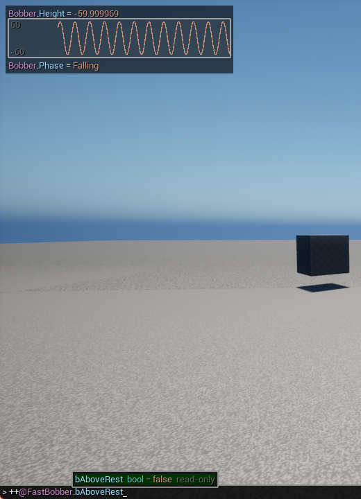
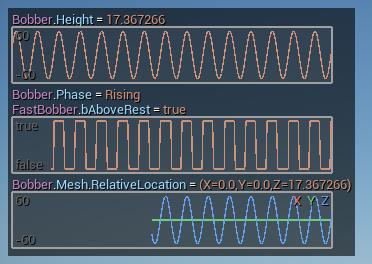
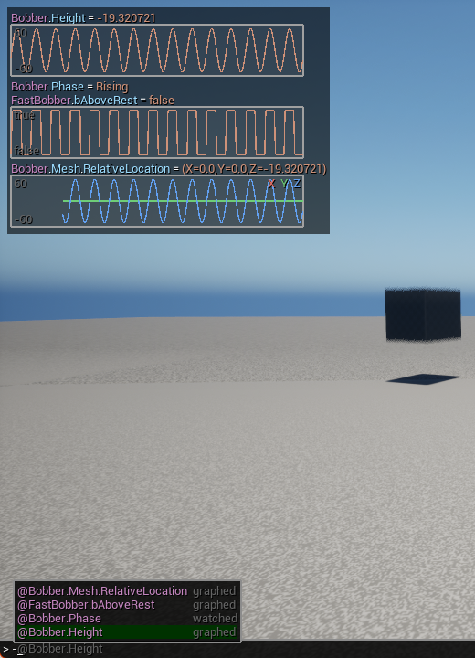
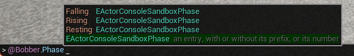
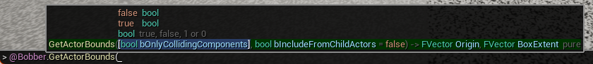
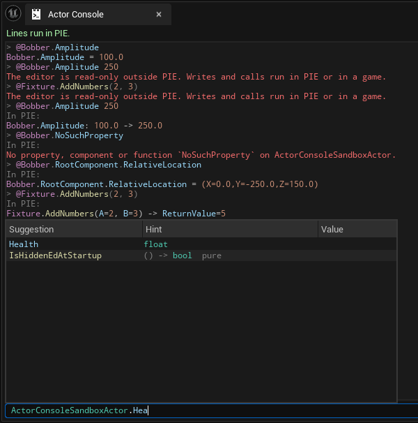

Actor Console lets you read and change actor properties, call functions and watch values while your game runs.
Autocomplete helps you find actors, properties, components and functions. The suggestions show the current values and the function parameters. The console shows the result of each command.
You can use Actor Console in the in-game console, in the Actor Console editor tab and in the Output Log. It works in Play In Editor and in packaged Debug and Development builds.
In Edit > Plugins, enable Actor Console. If the editor tells you to restart, restart it.
For this example, select an actor that you can see, for example a cube. In the commands below, replace MyActor with the name of the actor that you selected.
@. The console shows the actors in the level. Type some letters of the name of an actor, then press Tab. The console completes the name... The console shows the variables, components and functions of the actor. Type bHidden, then press Enter. The console shows the current value, for example bHidden = false.@MyActor.bHidden true. The actor disappears, and the console shows the change: bHidden: false -> true.@MyActor.bHidden false.@MyActor.GetActorLocation(). The console shows the location of the actor.After @, autocomplete shows the name and the class of each actor:

After ., the suggestions show the type and the current value of each variable. They also show the parameters and the results of each function:

The same commands work in Tools > Actor Console. You can also use the Output Log. To do this, select Actor in the menu next to the command field.
Start a command with a class name, or with @ and the name of an actor. To access the variables and components of an actor, use dots. You can read a value, change a value or call a function:
| Command | What it does |
|---|---|
@Player.CharacterMovement.MaxWalkSpeed | Reads a variable of the actor with the name Player. |
@Player.CharacterMovement.MaxWalkSpeed 1200 | Changes the value to 1200. You can also write = 1200. |
ACharacter.CharacterMovement.MaxWalkSpeed 1200 | Changes the value on every character in the world. |
@Player.GetActorLocation() | Calls a function and shows its result. |
@Player.SetActorLocation(NewLocation=0 0 300, bTeleport=true) | Calls a function with parameter names. |
KismetSystemLibrary.PrintString("Hello") | Calls a static function. You do not need an actor. |
@"Point Light 2".LightComponent.Intensity 5000 | Changes Intensity on an actor that has spaces in its name. |
@Player.Tags[0] Boss | Changes an array element. To read a map entry, use @Shop.Prices[Sword]. |
@Player.RootComponent.RelativeLocation.Z 300 | Changes one struct member and moves the component. |
Uppercase and lowercase letters work the same way. Put a name that has spaces or special characters in quotes, for example @"Point Light 2". In a quoted name, use \" for a quote and \\ for a backslash. Actor Console supports only these two escape sequences.
The console shows the values that you read, the changes and the function results. A command on a class reports each object that it changes. If a value is not valid, the message shows the expected type:

Pawn or APawn. For a Blueprint class, use BP_Enemy or BP_Enemy_C. A class name can also select components and other objects. For example, StaticMeshComponent.CastShadow false changes every static mesh component in the level.@. Use the label from the Outliner or the object name. Autocomplete shows both. Actors that spawn during play can have names such as @BP_Player_C_0. @Player selects an actor with the name Player. It does not automatically select the character of the player. If two or more actors have the same name, the command stops and lists these actors.stat fps and r.ScreenPercentage 50, work as usual.A path identifies a value or a function on an object. To access components, object references and struct members, use dots. For array indices and map keys, use brackets.
For example, @Player.Controller.PlayerCameraManager.DefaultFOV reads DefaultFOV from the camera manager of the Player actor.
For each name after a dot, Actor Console looks for these items in this sequence:
( comes after the name.You can access a component with its own name or with the variable that holds it.
If an object reference is None, the command stops. The message identifies that reference.
To read a value, enter @Player.CharacterMovement.MaxWalkSpeed. The console shows the object, the path and the current value:
BP_Player_C_0.CharacterMovement.MaxWalkSpeed = 600.0
Autocomplete shows the type of the variable next to the suggestion. When you read a variable, the console shows the value that the variable holds. It does not call a getter function.
To change a variable, enter a value after the name of the variable. You can use the Unreal format, for example (X=0.0,Y=0.0,Z=300.0), or one of these shorter forms:
| Type | You can write |
|---|---|
bool | true, false, 1, 0 |
| a struct of numbers | Numbers with spaces or commas between them. For example, 0 0 300 for a vector, or 0 90 0 for a rotator (Pitch, Yaw, Roll). |
| an enum | MOVE_Walking, Walking, or its number |
| an object | None, an actor as @Name, or the path of an object that is already in memory |
| a string or a name | Text in quotes, or the rest of the text in the command |
bHidden, RelativeLocation, the Intensity of a light and the StaticMesh of a mesh component through the engine functions that update them.MaxWalkSpeed: 600.0 -> 1200.0.To call a function, add parentheses after the name of the function. Enter the arguments in the parentheses. Separate the arguments with commas.
To enter only the arguments that you need, use parameter names. For example: @Player.SetActorLocation(NewLocation=0 0 300, bTeleport=true).
You do not have to enter all the arguments. In the editor and in Play In Editor, Actor Console uses the default values of the function, if they are available. In a packaged game, an argument that you do not enter gets zero, false or an empty value. The type of the argument sets which value it gets. The console shows all the argument values that the call used.
->. For example: -> ReturnValue=true, SweepHitResult=(...). Do not enter output parameters as arguments. The console also shows the final values of the reference parameters that you enter.). For example, @Player.GetActorLocation( runs as @Player.GetActorLocation().K2_ prefix is optional. For example, you can enter GetActorLocation. In the editor and in Play In Editor, you can also use the name that the Blueprint node shows.GetCurrentLevelName.Delay, from a command.To keep the value of a command on the screen, start the command with +. This is a watch. To also show a graph of the value, use ++. The values appear at the top of the game viewport. They update while you play.
To stop the watch of a value, enter - and then the path of the value. To remove all the watched values and graphs, enter only -.
| Command | What it does |
|---|---|
+@Player.CharacterMovement.MaxWalkSpeed | Shows the value. The value updates every frame. |
++@Player.RootComponent.RelativeLocation | Shows the value and a graph of the last 10 seconds. X, Y and Z have separate lines. |
-@Player.CharacterMovement.MaxWalkSpeed | Stops the watch of this value. |
- | Removes all the watched values and graphs. |
Enter a watch command in the same way as all other commands. In this example, ++@FastBobber.bAboveRest adds a third watched value:

Each watched value has its own row. A value that you watch with ++ also has a graph below its row:

+APawn.bHidden.bool values. Vectors, rotators and colours have a separate line for each member. A bool graph shows values between false and true. For text and objects, the watch shows a value without a graph.-. Each suggestion shows if the watch has a graph:
| Where | Available | Hints |
|---|---|---|
| In-game console, ~ | PIE, Debug and Development builds | Next to each suggestion. Function parameters and value formats appear above the suggestions. |
| Actor Console tab, Tools > Actor Console | Editor | Hint and value columns. Function parameters and value formats appear below the command. |
| Output Log, with Actor selected | Editor | In the tooltip |
ExecuteConsoleCommand, -ExecCmds, Unreal's console | Everywhere that the plugin runs | None |
To open the small in-game console, press ~ one time. It closes after each command. To open the full console, press ~ two times in the game. The full console stays open and shows the results of the commands.
ExecuteConsoleCommand or -ExecCmds, put ActorConsole before the command. For example: ActorConsole APawn.bHidden true. This sends the command to Actor Console through the command system of Unreal.UActorConsoleGameConsole as the base class of your console class.| After | Suggested | Hint |
|---|---|---|
@ | Actors in the world, by label and object name | Actor class |
| The first word | Classes with objects in the world, then classes with static functions | 12 in world or static functions |
. | Variables, components and functions | Variable type and value, component class, or function parameters and results |
[ | Available indices or keys | Element type and value |
| A variable and a space | true / false, enum entries, None and actors | Value type and format |
( or , | Values for the current parameter | Function parameters and results. The current parameter is highlighted, with its type and format. |
Variable hints can also have these labels:
replicated: the server can overwrite a change that you make on a client.read-only: Blueprint cannot change the variable, but Actor Console can change it during play.setter: the variable has a function that applies a new value.A function hint shows the parameters and the result types of the function. This is the signature of the function. The signature uses the same parameter roles as the Blueprint node. For example: (FVector NewLocation, bool bSweep, bool bTeleport) -> bool, FHitResult SweepHitResult.
Uppercase and lowercase letters work the same way. You can also type the first letters of two or more words: gal finds GetActorLocation.
Each suggestion shows the text that it inserts, for example true, @Player or CharacterMovement. To complete that part of the command, accept the suggestion.
When you enter a value, the hint shows the format that the value must have. The hint shows the format also when there are no suggested values. For example: FVector (X=0,Y=0,Z=0) or 0 0 0.
After an enum variable and a space, autocomplete shows the entries of the enum:

When you enter function arguments in the in-game console, the signature appears above the name of the function. The current parameter is highlighted. The value suggestions are above it:

In the in-game console and in the Actor Console tab, colours help you identify these items:
The same colours appear in commands, suggestions, hints and results. Labels such as replicated use a less bright colour. Errors and warnings have their own colours.
The colours show the role of each part of a command. They do not show that a name is correct. If a name has a spelling error, you see an error when you run the command. You can change the colours in Settings.
Outside Play In Editor, you can read values and use autocomplete. To change values and call functions, start Play In Editor. The commands then work on the actors in the running game.
If you try to change a value or call a function outside PIE, the command stops with this message: The editor is read-only outside PIE. Writes and calls run in PIE or in a game.
The Actor Console tab shows the current world and the result of each command:

Templates set the default values for new objects. Many objects can use one shared asset, for example a mesh, a material or a data asset. A change to a template or to an asset can have an effect on more than the running game.
Actor Console lets you read these objects. But it blocks direct changes and function calls on them. This protection also applies to class default objects, Blueprint component templates and Child Actor templates. Actor Console checks the last object in a path, also when the path gets to that object through a reference. If Actor Console blocks the command, the message identifies the object.
You cannot use a template as a value, but you can use an asset. Thus you can give a component a different mesh, and the mesh asset itself does not change. For example: @Rock.StaticMeshComponent.StaticMesh /Game/Meshes/SM_Boulder.SM_Boulder.
Functions that you call still run their own code. If that code changes an asset, the function can still make that change. Actor Console does not limit what your function does in its own code.
Each console works in its own client or server world.
Package your game with Actor Console enabled. Use a Debug or Development build.
| Editor and PIE | Debug, Development | Shipping | |
|---|---|---|---|
| Actor Console | yes | yes | not included |
@ by label | yes | yes | - |
| Default argument values, Blueprint node names | yes | no | - |
In a packaged game, enter a value for each function parameter. The default parameter values from the editor are not available. If you do not enter a parameter, it gets zero, false or an empty value. The type of the parameter sets which value it gets.
In packaged games, use function names, for example GetActorLocation. You cannot use the names that only Blueprint nodes show. The K2_ prefix is still optional.
Shipping builds do not contain Actor Console. If your C++ module uses the Actor Console API, do the steps in C++ setup.
Project Settings > Plugins > Actor Console:
| Setting | Default | Meaning |
|---|---|---|
| Max Printed Instances | 100 | The maximum number of objects that the console shows when you read a class. The result also gives the number of objects that it does not show. Changes and function calls report every object. |
| Max Value Length | 200 | The maximum length of a value that the console shows. The console shortens longer values. The log has the full values. |
| Max Suggestions | 200 | The maximum number of autocomplete suggestions |
| Replace Game Console | on | Use the in-game console of Actor Console. This does not apply if the project has a custom console class. |
| Color Syntax | on | Show commands, suggestions, hints and results with a colour for each part. When this setting is off, each console uses its usual colours. |
| Class Color | teal | Classes, and the types in hints and function signatures |
| Actor Color | orchid | Actor names, such as @Player, and object names in results |
| Property Color | light blue | Variables, components, and names of parameters, arguments and results |
| Function Color | pale yellow | Functions |
| Value Color | orange | Numbers, text, true, None, enum entries, indices, keys and default values |
| Error Color | red | Error messages |
| Warning Color | yellow | Warning messages |
Add ActorConsoleRuntime to the dependencies of your module only for builds that are not Shipping builds. In the .Build.cs file of your module, put this statement:
PrivateDependencyModuleNames.Add("ActorConsoleRuntime");
in an if block with this condition:
Target.Configuration != UnrealTargetConfiguration.Shipping
In C++, put all the Actor Console includes and code between #if !UE_BUILD_SHIPPING and #endif. Do this also for the examples below.
Include ActorConsole.h with #include "ActorConsole.h".
Make a context for the world that you want to use:
FActorConsoleContext Context(GetWorld());
Run a command and store its result:
FActorConsoleResult Result = FActorConsole::Execute(TEXT("APawn.bHidden true"), Context);
The result contains the objects, values, arguments and outputs of the command.
To add autocomplete to your own interface, use FActorConsole::Complete. It returns suggestions for a command and a cursor position.
Some properties need a function call to update the game after their value changes. Register that function with FActorConsoleEffects::RegisterFunction.
For example, use SetBrightness when the Brightness property of UMyLampComponent changes. First, store the class:
const UClass* LampClass = UMyLampComponent::StaticClass();
Then register the property and its setter:
FActorConsoleEffects::RegisterFunction(LampClass, TEXT("Brightness"), TEXT("SetBrightness"));
For custom update logic, use FActorConsoleEffects::Register with your own callback.
To add the in-game features of Actor Console to your console, use UActorConsoleGameConsole as the base class of your console.
When you cook the game, Actor Console records which parameter of each function gives its world context. The packaged game uses this record to call functions with the correct arguments.
If this record is missing or does not agree with the build, Actor Console blocks each call whose world context it cannot identify. The message tells you the problem. Package the game again with Actor Console enabled.
To ask questions, report bugs and suggest features, use #actor-console. This channel on Discord is only for this plugin.